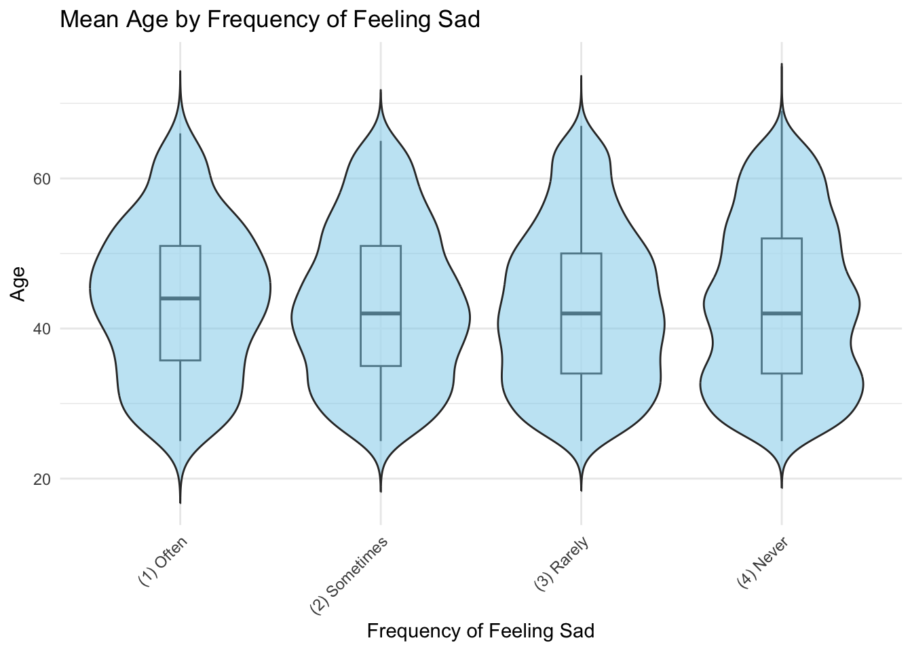
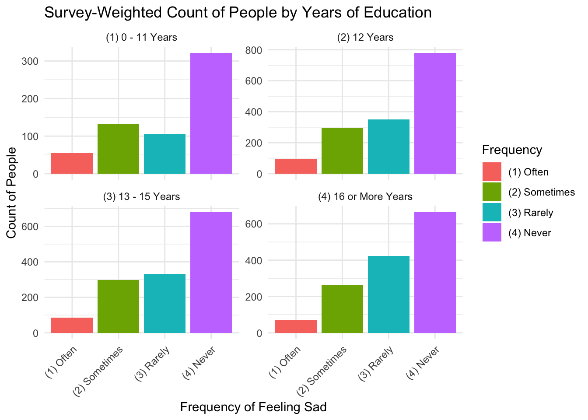
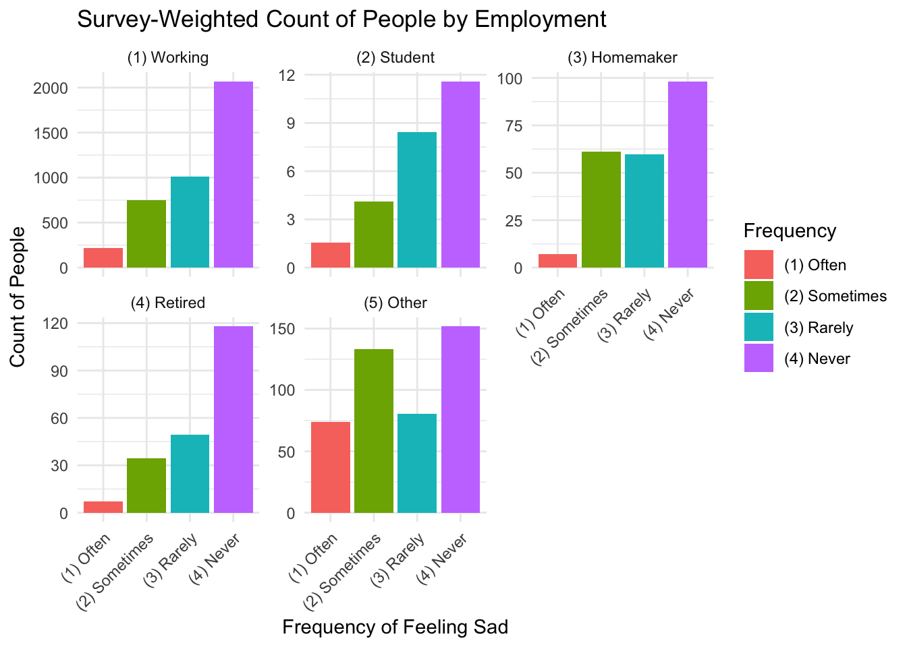
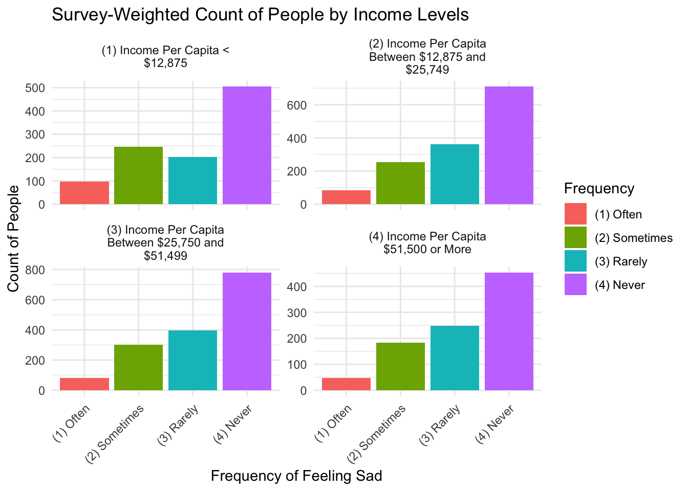

library(survey)
library(dplyr)
library(tidyr)
library(ggplot2)
library(forcats)
library(car)
load("35067-0001-Data.rda")
d1 <- da35067.0001 %>%
select(AGE, EDUCAT, EMPCAT, INC_CAT, NSD1E, RESPID, CASEWGT, STR, SECU, I_ALD30) %>%
drop_na() %>%
rename(Frequency = NSD1E, Age = AGE, Education = EDUCAT, Employment = EMPCAT, Income = INC_CAT)
d1w <- svydesign(id = ~RESPID, weights = ~CASEWGT, strata = ~STR, nest = TRUE, cluster = ~SECU, data = d1)Example analysis
Feeling sad and incident alcohol dependence
Aim
This analysis aims to explore the association between the frequency of feeling sad and incident alcohol dependence.
Incidental alcohol dependence refers to alcohol dependence during the past 30 days.
Intended Audience
The intended audience for this analysis includes researchers specializing in mental health, alcohol abuse, and related fields, mental health practitioners, and people who have concerns about mental health and alcohol abuse issues.
Data Source
All data was sourced from The National Comorbidity Survey: Reinterview (NCS-2), 2001-2002 (ICPSR 35067). The NCS-2 survey was follow-up interviews with 5,001 individuals who had participated in the NCS-1 baseline survey a decade ago. Carried out via computer-assisted personal interviews, the NCS-2 survey targeted the noninstitutionalized civilian population aged 25 to 69 across the 48 contiguous United States. The purpose of this longitudinal survey, including NCS-1 and 2, was to track changes in mental disorders, substance use disorders, predictors of changes, and consequences over the ten-year period. Demographic and background information collected include age, education, employment, household composition, household income, marital status, and region. Data dictionary and more information can be accessed from NCS-2 survey.
Exploratory Data Analysis
Data Wrangling
The svydesign was used to account for survey design features of the data.
Demographic Variable Distribution
The average age of our study population is 43 years (SD = 2.6). The average age across the different categories of the primary covariate is comparable.
library(ggplot2)
ggplot(d1, aes(x = Frequency, y = Age)) +
geom_boxplot(alpha = 0.5, width = 0.2) +
geom_violin(trim = FALSE, fill = "skyblue", alpha = 0.5) +
labs(
title = "Mean Age by Frequency of Feeling Sad",
x = "Frequency of Feeling Sad",
y = "Age"
) +
theme_minimal() +
theme(axis.text.x = element_text(angle = 45, hjust = 1))
Only 13% of participants have completed 0–11 years of education, while approximately 30% of participants fall into each of the other education levels.
edu <- as.data.frame(svytable(~Education + Frequency, design = d1w))
ggplot(edu, aes(x = Frequency, y = Freq, fill = Frequency)) +
geom_col(position = "dodge") +
facet_wrap(~ Education, scales = "free_y") +
labs(
title = "Survey-Weighted Count of People by Years of Education",
x = "Frequency of Feeling Sad",
y = "Count of People",
fill = "Frequency"
) +
theme_minimal() +
theme(axis.text.x = element_text(angle = 45, hjust = 1))
The majority of participants (82%) are working.
emp <- as.data.frame(svytable(~Employment + Frequency, design = d1w))
ggplot(emp, aes(x = Frequency, y = Freq, fill = Frequency)) +
geom_col(position = "dodge") +
facet_wrap(~ Employment, scales = "free_y") +
labs(
title = "Survey-Weighted Count of People by Employment",
x = "Frequency of Feeling Sad",
y = "Count of People",
fill = "Frequency"
) +
theme_minimal() +
theme(axis.text.x = element_text(angle = 45, hjust = 1))
More participants are in the middle two per capita income categories (28% in $12,875 - $25,749 and 31% in $25,750 - $51,499), while fewer participants are in the lowest and highest categories (21% in < $12,875 and 19% in $51,500 or More).
inc <- as.data.frame(svytable(~Income + Frequency, design = d1w))
ggplot(inc, aes(x = Frequency, y = Freq, fill = Frequency)) +
geom_col(position = "dodge") +
facet_wrap(~ Income, scales = "free_y", labeller = label_wrap_gen(width = 25)) +
labs(
title = "Survey-Weighted Count of People by Income Levels",
x = "Frequency of Feeling Sad",
y = "Count of People",
fill = "Frequency"
) +
theme_minimal() +
theme(axis.text.x = element_text(angle = 45, hjust = 1))
Modeling
# Relevel Frequency with "never" as the reference group
d1w$variables <- d1w$variables %>%
mutate(
Frequency = fct_relevel(Frequency, "(4) Never"),
I_ALD30 = fct_relevel(I_ALD30, "(5) Not Endorsed")
)a1 <- svyglm(I_ALD30 ~ Frequency, family = binomial(link = "logit"), design = d1w)
summary(a1)
Call:
svyglm(formula = I_ALD30 ~ Frequency, design = d1w, family = binomial(link = "logit"))
Survey design:
svydesign(id = ~RESPID, weights = ~CASEWGT, strata = ~STR, nest = TRUE,
cluster = ~SECU, data = d1)
Coefficients:
Estimate Std. Error t value Pr(>|t|)
(Intercept) -6.7043 0.6304 -10.635 < 2e-16 ***
Frequency(1) Often 3.4443 0.7260 4.744 2.15e-06 ***
Frequency(2) Sometimes 2.0634 0.6908 2.987 0.00283 **
Frequency(3) Rarely 1.5131 0.7825 1.934 0.05323 .
---
Signif. codes: 0 '***' 0.001 '**' 0.01 '*' 0.05 '.' 0.1 ' ' 1
(Dispersion parameter for binomial family taken to be 1.000201)
Number of Fisher Scoring iterations: 9exp(coef(a1)) (Intercept) Frequency(1) Often Frequency(2) Sometimes
0.001225638 31.321832146 7.872516160
Frequency(3) Rarely
4.540624653 ci <- confint(a1)
exp(ci) 2.5 % 97.5 %
(Intercept) 0.0003561422 4.217944e-03
Frequency(1) Often 7.5455747282 1.300176e+02
Frequency(2) Sometimes 2.0319906714 3.050039e+01
Frequency(3) Rarely 0.9791679428 2.105591e+01a2 <- svyglm (I_ALD30 ~ Frequency + Age, family = binomial(link = "logit"), design = d1w)
summary(a2)
Call:
svyglm(formula = I_ALD30 ~ Frequency + Age, design = d1w, family = binomial(link = "logit"))
Survey design:
svydesign(id = ~RESPID, weights = ~CASEWGT, strata = ~STR, nest = TRUE,
cluster = ~SECU, data = d1)
Coefficients:
Estimate Std. Error t value Pr(>|t|)
(Intercept) -5.89018 0.95014 -6.199 6.14e-10 ***
Frequency(1) Often 3.42127 0.72492 4.719 2.43e-06 ***
Frequency(2) Sometimes 2.04016 0.68558 2.976 0.00294 **
Frequency(3) Rarely 1.49563 0.77736 1.924 0.05441 .
Age -0.01863 0.02015 -0.924 0.35534
---
Signif. codes: 0 '***' 0.001 '**' 0.01 '*' 0.05 '.' 0.1 ' ' 1
(Dispersion parameter for binomial family taken to be 1.001347)
Number of Fisher Scoring iterations: 9# final model
a3 <- svyglm (I_ALD30 ~ Frequency + Age + Education, family = binomial(link = "logit"), design = d1w)
summary(a3)
Call:
svyglm(formula = I_ALD30 ~ Frequency + Age + Education, design = d1w,
family = binomial(link = "logit"))
Survey design:
svydesign(id = ~RESPID, weights = ~CASEWGT, strata = ~STR, nest = TRUE,
cluster = ~SECU, data = d1)
Coefficients:
Estimate Std. Error t value Pr(>|t|)
(Intercept) -5.17607 1.01088 -5.120 3.17e-07 ***
Frequency(1) Often 3.37992 0.73493 4.599 4.35e-06 ***
Frequency(2) Sometimes 2.05463 0.68300 3.008 0.00264 **
Frequency(3) Rarely 1.54566 0.79097 1.954 0.05074 .
Age -0.02200 0.02071 -1.062 0.28815
Education(2) 12 Years -0.24316 0.52286 -0.465 0.64191
Education(3) 13 - 15 Years -1.63412 0.64481 -2.534 0.01130 *
Education(4) 16 or More Years -0.68544 0.71081 -0.964 0.33494
---
Signif. codes: 0 '***' 0.001 '**' 0.01 '*' 0.05 '.' 0.1 ' ' 1
(Dispersion parameter for binomial family taken to be 0.9536442)
Number of Fisher Scoring iterations: 9exp(coef(a3)) (Intercept) Frequency(1) Often
0.005650156 29.368537133
Frequency(2) Sometimes Frequency(3) Rarely
7.803983073 4.691073327
Age Education(2) 12 Years
0.978241265 0.784144983
Education(3) 13 - 15 Years Education(4) 16 or More Years
0.195123657 0.503866158 ci1 <- confint(a3)
exp(ci1) 2.5 % 97.5 %
(Intercept) 0.0007787283 0.04099538
Frequency(1) Often 6.9527422236 124.05335127
Frequency(2) Sometimes 2.0455236747 29.77337909
Frequency(3) Rarely 0.9950214766 22.11627535
Age 0.9393219601 1.01877313
Education(2) 12 Years 0.2813356647 2.18558623
Education(3) 13 - 15 Years 0.0551199739 0.69073403
Education(4) 16 or More Years 0.1250609421 2.03005911vif(a3) GVIF Df GVIF^(1/(2*Df))
Frequency 4.900012 3 1.303265
Age 1.469820 1 1.212361
Education 4.794003 3 1.298523a4 <- svyglm (I_ALD30 ~ Frequency + Age + Education + Employment, family = binomial(link = "logit"), design = d1w)
summary(a4)
Call:
svyglm(formula = I_ALD30 ~ Frequency + Age + Education + Employment,
design = d1w, family = binomial(link = "logit"))
Survey design:
svydesign(id = ~RESPID, weights = ~CASEWGT, strata = ~STR, nest = TRUE,
cluster = ~SECU, data = d1)
Coefficients:
Estimate Std. Error t value Pr(>|t|)
(Intercept) -5.26812 1.07042 -4.922 8.87e-07 ***
Frequency(1) Often 3.23967 0.77097 4.202 2.69e-05 ***
Frequency(2) Sometimes 2.00308 0.71858 2.788 0.00533 **
Frequency(3) Rarely 1.54110 0.80015 1.926 0.05416 .
Age -0.02291 0.02084 -1.099 0.27187
Education(2) 12 Years -0.10861 0.58686 -0.185 0.85318
Education(3) 13 - 15 Years -1.50998 0.68618 -2.201 0.02781 *
Education(4) 16 or More Years -0.53025 0.80909 -0.655 0.51227
Employment(2) Student -12.41319 0.51407 -24.147 < 2e-16 ***
Employment(3) Homemaker -1.11577 1.06911 -1.044 0.29670
Employment(4) Retired -0.34921 1.04638 -0.334 0.73860
Employment(5) Other 0.64206 0.57393 1.119 0.26331
---
Signif. codes: 0 '***' 0.001 '**' 0.01 '*' 0.05 '.' 0.1 ' ' 1
(Dispersion parameter for binomial family taken to be 0.8436852)
Number of Fisher Scoring iterations: 16a5 <- svyglm (I_ALD30 ~ Frequency + Age + Education + Income, family = binomial(link = "logit"), design = d1w)
summary(a5)
Call:
svyglm(formula = I_ALD30 ~ Frequency + Age + Education + Income,
design = d1w, family = binomial(link = "logit"))
Survey design:
svydesign(id = ~RESPID, weights = ~CASEWGT, strata = ~STR, nest = TRUE,
cluster = ~SECU, data = d1)
Coefficients:
Estimate Std. Error
(Intercept) -5.03413 0.94177
Frequency(1) Often 3.32492 0.74335
Frequency(2) Sometimes 2.00048 0.69479
Frequency(3) Rarely 1.56428 0.78780
Age -0.01708 0.01900
Education(2) 12 Years -0.05235 0.55855
Education(3) 13 - 15 Years -1.39122 0.69577
Education(4) 16 or More Years -0.45410 0.78233
Income(2) Income Per Capita Between $12,875 and $25,749 -0.68883 0.53424
Income(3) Income Per Capita Between $25,750 and $51,499 -1.36452 0.54356
Income(4) Income Per Capita $51,500 or More -0.24294 0.67312
t value Pr(>|t|)
(Intercept) -5.345 9.43e-08 ***
Frequency(1) Often 4.473 7.89e-06 ***
Frequency(2) Sometimes 2.879 0.0040 **
Frequency(3) Rarely 1.986 0.0471 *
Age -0.899 0.3689
Education(2) 12 Years -0.094 0.9253
Education(3) 13 - 15 Years -2.000 0.0456 *
Education(4) 16 or More Years -0.580 0.5616
Income(2) Income Per Capita Between $12,875 and $25,749 -1.289 0.1973
Income(3) Income Per Capita Between $25,750 and $51,499 -2.510 0.0121 *
Income(4) Income Per Capita $51,500 or More -0.361 0.7182
---
Signif. codes: 0 '***' 0.001 '**' 0.01 '*' 0.05 '.' 0.1 ' ' 1
(Dispersion parameter for binomial family taken to be 0.9638713)
Number of Fisher Scoring iterations: 9a6 <- svyglm (I_ALD30 ~ Frequency + Age + Education + Income + Employment, family = binomial(link = "logit"), design = d1w)
summary(a6)
Call:
svyglm(formula = I_ALD30 ~ Frequency + Age + Education + Income +
Employment, design = d1w, family = binomial(link = "logit"))
Survey design:
svydesign(id = ~RESPID, weights = ~CASEWGT, strata = ~STR, nest = TRUE,
cluster = ~SECU, data = d1)
Coefficients:
Estimate Std. Error
(Intercept) -5.07373 1.00715
Frequency(1) Often 3.23875 0.77405
Frequency(2) Sometimes 1.98372 0.72615
Frequency(3) Rarely 1.57673 0.80117
Age -0.01713 0.01872
Education(2) 12 Years 0.03094 0.60601
Education(3) 13 - 15 Years -1.33018 0.72031
Education(4) 16 or More Years -0.38008 0.84325
Income(2) Income Per Capita Between $12,875 and $25,749 -0.68545 0.54692
Income(3) Income Per Capita Between $25,750 and $51,499 -1.34737 0.56703
Income(4) Income Per Capita $51,500 or More -0.24912 0.71258
Employment(2) Student -12.65602 0.62561
Employment(3) Homemaker -1.35477 1.09825
Employment(4) Retired -0.59939 1.08812
Employment(5) Other 0.34973 0.61013
t value Pr(>|t|)
(Intercept) -5.038 4.88e-07 ***
Frequency(1) Often 4.184 2.91e-05 ***
Frequency(2) Sometimes 2.732 0.00632 **
Frequency(3) Rarely 1.968 0.04912 *
Age -0.915 0.36017
Education(2) 12 Years 0.051 0.95928
Education(3) 13 - 15 Years -1.847 0.06485 .
Education(4) 16 or More Years -0.451 0.65220
Income(2) Income Per Capita Between $12,875 and $25,749 -1.253 0.21016
Income(3) Income Per Capita Between $25,750 and $51,499 -2.376 0.01753 *
Income(4) Income Per Capita $51,500 or More -0.350 0.72665
Employment(2) Student -20.230 < 2e-16 ***
Employment(3) Homemaker -1.234 0.21742
Employment(4) Retired -0.551 0.58176
Employment(5) Other 0.573 0.56653
---
Signif. codes: 0 '***' 0.001 '**' 0.01 '*' 0.05 '.' 0.1 ' ' 1
(Dispersion parameter for binomial family taken to be 0.9056165)
Number of Fisher Scoring iterations: 16vif(a6) GVIF Df GVIF^(1/(2*Df))
Frequency 12.436557 3 1.522124
Age 2.093769 1 1.446986
Education 12.823064 3 1.529908
Income 11.849950 3 1.509916
Employment 9.054072 4 1.317060
Functions from the
dplyr Package
select()distinct()rename()mutate()
Functions from the
tidyr Package
drop_na()
Functions from the
ggplot2 Package
geom_boxplot()geom_violin()geom_col()
Results
In the crude model, the odds of developing incident alcohol dependence are significantly lower among people who sometimes (OR: 0.251, 95% CI: 0.102 - 0.617), rarely (OR: 0.145, 95% CI: 0.0458 - 0.459), and never (OR: 0.0319, 95% CI: 0.00769, 0.133) feel sad compared to those who often feel sad (reference group: OR = 1). After adjusting for potential confounders, the odds of incident alcohol dependence slightly increase among people who sometimes (OR: 0.266, 95% CI: 0.103 - 0.685), rarely (OR: 0.160, 95% CI: 0.0433 - 0.590,) and never (OR: 0.0341, 95% CI: 0.00806, 0.144) feel sad, but the odds are still significantly lower compared to those who often feel sad (reference group: OR = 1). These findings indicate that a higher frequency of sad feelings is associated with higher odds of incident alcohol dependence.
References
Kessler, R. 2015. “National Comorbidity Survey: Reinterview (NCS-2), 2001-2002 [Data Set].” Inter-university Consortium for Political; Social Research [distributor]. https://doi.org/10.3886/ICPSR35067.v2.
“Svydesign: Survey Sample Analysis.” 2024. https://www.rdocumentation.org/packages/survey/versions/4.4-2/topic/svydesign.
“Svyglm: Survey-Weighted Generalised Linear Models.” 2024. https://www.rdocumentation.org/packages/survey/versions/4.4-2/topics/svyglm.
University of Delaware. 2024a. “Multiple Logistic Regression [Internet].” https://stats.libretexts.org/@go/page/1769.
———. 2024b. “Simple Logistic Regression [Internet].” https://stats.libretexts.org/@go/page/1751.